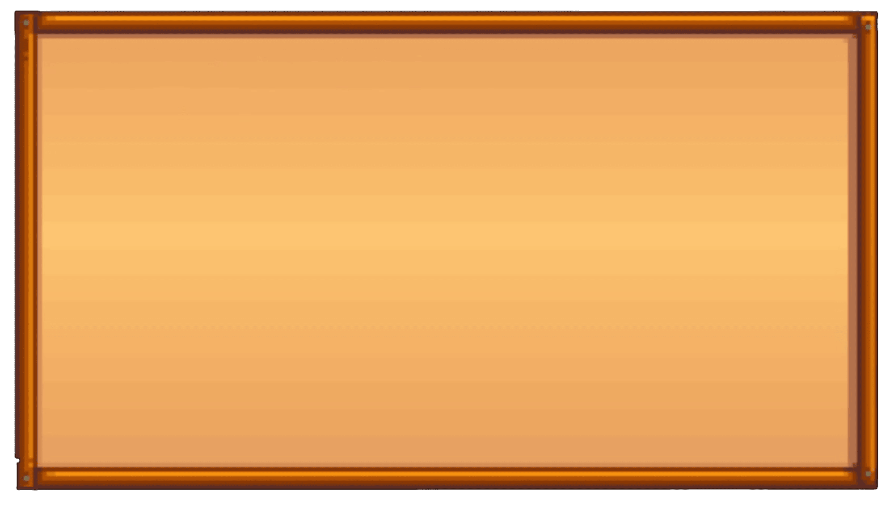

Sobre Stardew Valley!

Stardew Valley é um jogo independente no estilo RPG desenvolvido por Erick Barone, também conhecido como Concerned Ape, tendo seu
início de desenvolvimento em 2012 e lançamento apenas em 26 de fevereiro de 2016. Erick se formou em ciêcia da computação em 2011, admitindo que nunca pensou
em fazer jogos, mas Stardew poderia ser um bom projeto para seu currículo, se comprometendo por mais de quatro anos em desenvolvê-lo. Para evitar gastos, ele
inicialmente morou com os pais e depois, quando se mudou para morar com sua namorada Amber, a jovem teve que trabalhar em dois empregos para suprir as despesas
enquanto Barone programava horas a fio e saía para trabalhar como garçom.
Fotografia de Erick Barone com o seu nome de desenvolvedor no computador
.png)
Em dezembro de 2024, o jogo registrou mais de 41 milhões de cópias vendidas, estando disponível em Android, Mac, Xbox, Playstation,
Linux e muito mais! O jogador assume o papel de um personagem que herda uma fazenda em ruínas de seu avô. A missão principal é restaurar a fazenda e transformá-la
em um lugar próspero, cultivando plantas, criando animais e interagindo com a comunidade local. O jogo mistura elementos de simulação de vida com exploração,
combate e interação social.
A agricultura é o coração do jogo. Desde o plantio das sementes até a colheita, a terra precisa ser regada e cuidada a cada dia, o jogo
oferece uma grande variedade de plantas que variam conforme a estação do ano. O cuidado com os animais também é importante, vacas, galinhas, ovelhas e outros
bichos precisam de atenção diária, incluindo alimentação e cuidados especiais, como tosquia ou ordenha. Outras mecãnicas importantes também são incluidas no jogo
como mineração nas minas, luta com inimigos, interações sociais com NPCS e crafting de recursos e comidas.